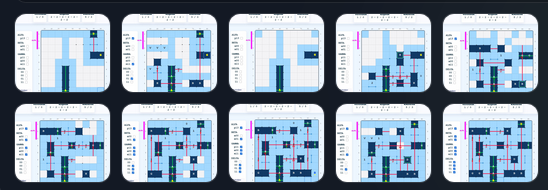

SMYOZ
Környezet: Alap
TOBORZÓ
Programok
SMYOZ GENERÁTOR – STAT
SMYOZ GENERÁTOR – MANUAL
SMYOZ EXPLORER
Ismertetők
SMYOZ leírás (GPT – GEN/EXPL)
EXPLORER – Automatizmusok
SMYOZ leírás (papíralap)
Cikkek
Hennyey Judit (1983)
Szilágyi Miklós (2006)
Rejtvények – megoldások

Új fül
Vissza
Bezár
← Előző
Következő →
Bezár